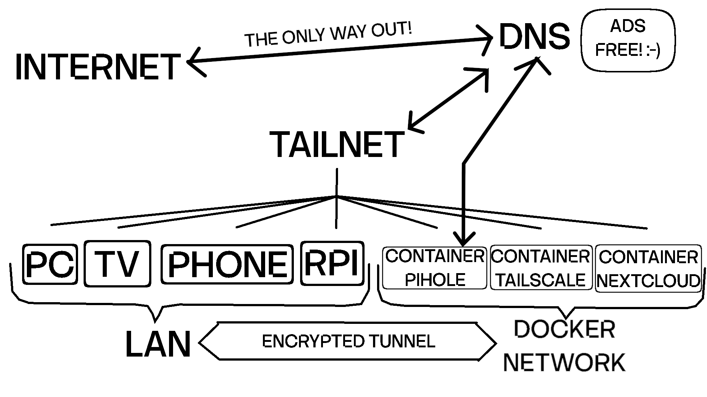

TAILNET

In this tutorial, we will set up a virtual network to connect all of our devices, as well as the containers on our server, in a controlled and secure way. We will use Tailscale, which provides servers on the internet that help connect devices even behind a CGNAT by creating UDP hole-punching tunnels or relaying traffic when necessary.
All communication within this virtual network is fully encrypted end-to-end, ensuring that no external server has the ability to read or inspect our traffic. This makes the entire setup both extremely easy to deploy and highly secure.
Tailscale also allows us to configure a router node between our server and its containers, enabling seamless communication. As a result, you can access services like Pi-hole directly from your phone as if it were a real device on your local network, or connect to any containerized service without any issues.
Tailscale Account
You need to create an account in the following link: TAILSACLE ↗
For now, just fill out the initial questionnaire. You can skip adding devices and everything else.
We will come back to this Tailscale web interface in order to create a key to access from a Tailscale containerized instance(A NODE in your tailnet) later.
Project Directory
Connect to your server via ssh.
Create your project's directory inside your @conf-files subvolume:
Download the compose.yaml file and your .env file runnin the following command:
Go back to the tailnet web interface and create a key for the node that will be deployed in your server, you can do that by going to:
Settings => Personal Settings | Keys => Generate auth key...
Add a description e.g. YOUR-SERVER-HOSTNAME, do not make it resuable and keep the default expiry date as you will deactivate expiry date later for this key.
click on generate and do not close the overlay panel yet.
Update your .env file with the generated key from the web interface and set a name for this node e.g. YOUR-SERVER-HOSTNAME.
To check your compose.yaml file before deployment, run:
cat compose.yaml
Deploy your project:
Tailnet Setup
Go back to your Tailscale web interface and allow the routes advertised by your node:
Machines => Your node settings (Meatball Menu) => Edit route settings... => check the box | subnet 10.10.10.0/24 => Save
If you want to disable expiry date on your generated key:
Machines => Your node settings (Meatball Menu) => Disable key expiry
Add your pihole service as the tailnet DNS
DNS => NameServers | Add nameserver => Custom... => (type) 10.10.10.2 => Save
Allow Override DNS server
Slide override DNS server (on)
Add Nodes To Your Tailnet
Now you can start adding more nodes to your tailnet, download the Tailscale app in your device and login with your Tailscale credentials.
Ubuntu
To add a linux pc (ubuntu) as a node:
Run the following command:
To start the connection, update the following command with your auth key and run:
If you want to check your connection to your Tailnet:
If you want to disable expiry date on your generated key:
Machines => Your node settings (Meatball Menu) => Disable key expiry
If your server is turned off you need to disconnect your device from the tailnet in order to resolve domains properly:
Phone and TV
To connect your phone and tv to your tailnet download the Tailscale app from your store.
You can and login using your Tailscale credentials or the recommended way is generating an auth key, help yourself with whatsapp to send this key from your pc to your phone or type it in:
Settings Gear => Accounts => (Kebab Menu) => Use an auth key
Set your node name in:
Machines => Your node settings (Meatball Menu) => Edit machine name => Slide Auto-Generate | Set a name => Update
If you want to disable expiry date on your generated key:
Machines => Your node settings (Meatball Menu) => Disable key expiry
Make sure your phone is using your Tailscale DNS (pihole) go to your phone Tailscale interface (app) in:
Settings => DNS settings => make sure "Use Tailscale DNS is on and Resolvers is 10.10.10.2"
If your server is turned off you need to disconnect your device from the tailnet in order to resolve domains properly:
Go to your phone Tailscale interface (app) and turn off the connection.
WARNING
If your server is turned off you need to disconnect your device from the tailnet in order to resolve domains properly:
Go to your phone Tailscale interface (app) and turn off the connection.
Resume Pi-hole SetUp
Now you can continue setting up Pi-hole, add your custom domain names for your local services, and access them seamlessly